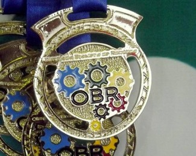
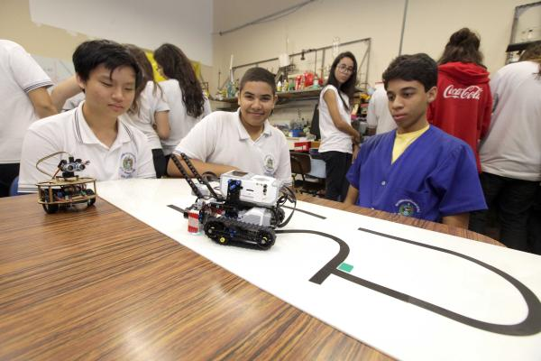
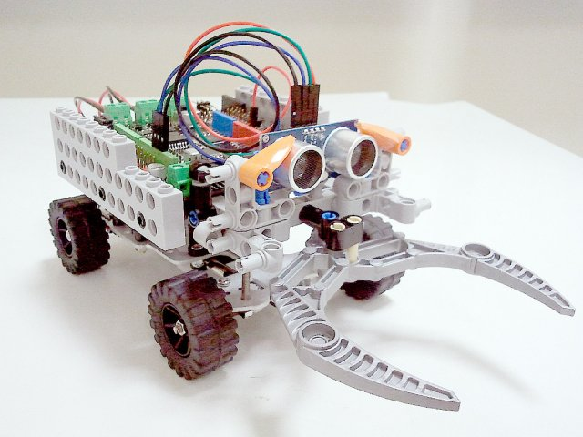

OLIMPÍADA BRASILEIRA DE ROBÓTICA
Proporcionando a formação de um cidadão que se relacione melhor com a tecnologia.
A Olimpíada Brasileira de Robótica (OBR) é uma das olimpíadas científicas brasileiras apoiadas pelo CNPq que utiliza-se da temática da robótica – tradicionalmente de grande aceitação junto aos jovens – para estimulá-los às carreiras científico-tecnológicas, identificar jovens talentosos e promover debates e atualizações no processo de ensino-aprendizagem brasileiro. A OBR possui duas modalidades que procuram adequar-se tanto ao público que nunca viu robótica quanto ao público de escolas que já têm contato com a robótica educacional. Anualmente a OBR elabora e gere a aplicação de provas teóricas e práticas em todo o Brasil utilizando essa temática. A OBR destina-se a todos os alunos de qualquer escola pública ou privada do ensino fundamental, médio ou técnico em todo o território nacional, e é uma iniciativa pública, gratuita e sem fins lucrativos.
Premiação
Aprendizado
Entretenimento
